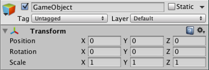

Introduction to components
A GameObject contains components. (See documentation on GameObject for more information.)
Below is an example of how the GameObject and component relationship works using the most common component, the Transform Component.
You can see the Transform Component by looking at the Inspector for a new GameObject:
- Open any scene in any project in the Unity Editor. (See documentation on Getting Started for guidance on this.)
- Create a new GameObject (menu: GameObject > Create Empty).
- The new GameObject is pre-selected, with the Inspector showing its Transform Component, as in the image below. (If it isn't pre-selected, click on it to see its Inspector.)

Notice that the new, empty GameObject contains a name ("GameObject"), a Tag ("Untagged"), and a Layer ("Default"). It also contains a Transform Component.
The Transform Component
It is impossible to create a GameObject in the Editor without a Transform Component. This component defines the GameObject's position, rotation, and scale in the game world and Scene view.
The Transform Component also enables a concept called 'parenting' which is a critical part of working with GameObjects. To learn more about the Transform Component and parenting, see the Transform Component Reference page.
Other components
The Transform Component is critical to all GameObjects, so each GameObject has one but GameObjects can contain other components as well.
Every Scene has a Main Camera GameObject by default. It has several components.(You can see see this by selecting it in your open Scene to view its Inspector.)

Looking at the Inspector of the Main Camera GameObject, you can see that it contains additional components. Specifically, a Camera Component, a GUILayer, a Flare Layer, and an Audio Listener. All of these components provide functionality to this GameObject.
Rigidbody, Collider, Particle System, and Audio are all different components that you can add to a GameObject.